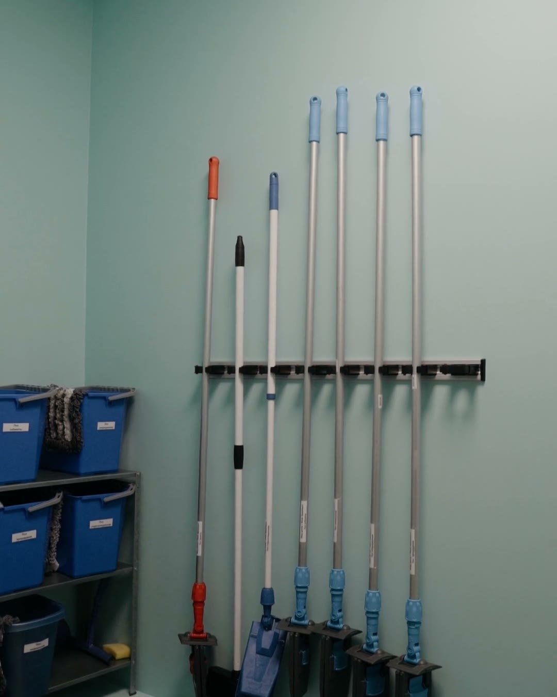
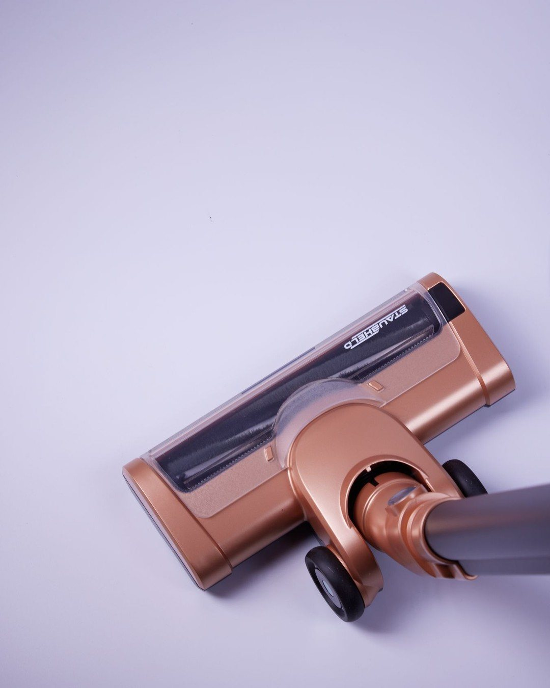

밀대 청소기 추천, 본체보다 패드 규격이 먼저인 이유
※ 이 글에는 제휴 링크가 포함되어 있으며, 링크를 통해 구매하시면 일정 수수료를 받을 수 있습니다. (가격은 같습니다)
※ 이 포스팅은 쿠팡 파트너스 활동의 일환으로, 이에 따른 일정액의 수수료를 제공받습니다.
청소기를 매번 꺼내어 선을 꽂았다가 다시 정리하는 과정이 부담스러워 바닥 청소를 자꾸 미루는 분들이 계신 반면, 긴 손잡이 판에 청소포나 패드를 끼워 서서 가볍게 바닥을 미는 방식을 선택하는 분들도 계십니다.

밀대 청소기를 고를 때는 본체 모양보다 전용 패드만 맞는 구조인지 시중 청소포가 들어가는지 규격을 확인하는 것이 중요해요.
바닥을 자주 가볍게 닦고 싶은 집에는 잘 맞지만 전용 패드를 따로 구하기가 번거로운 집이라면 구매를 다시 생각해 보는 게 좋답니다 💡
자꾸 미루게 되는 바닥 청소의 원인


청소기를 꺼내고, 선을 꽂고, 다 쓴 뒤에 다시 정리하는 일 자체가 하나의 큰 번거로움으로 다가올 때가 있습니다.
이러한 과정 때문에 바닥 청소를 자꾸 미루게 되는 경우가 생깁니다.
밀대 청소기가 하는 일
밀대 청소기 추천 정보를 알아보면 기본 구조는 생각보다 간단합니다.
- 1단계: 청소포나 패드를 끼웁니다.
- 2단계: 서서 바닥을 떱니다.
긴 손잡이 끝 판에 청소포나 패드를 끼운 뒤, 쪼그려 앉지 않고 서서 바닥을 밀면 되는 방식입니다.
밀대 청소기 추천 제품 선택 시 놓치기 쉬운 점
하지만 본체만 보고 사면 놓치는 게 있습니다.
만약 전용 패드만 맞는 제품을 사게 되면, 그 패드를 계속 사야 하기 때문입니다.
밀대 청소기 추천을 받으실 때 본체 외형만 볼 것이 아니라 소모품 수급 방식을 살펴봐야 하는 이유입니다.
고를 때 볼 기준 2가지
밀대 청소기를 고를 때는 다음 두 가지를 살펴보는 것이 필요합니다.
- 첫째: 끼우는 규격입니다. 시중 청소포가 맞는지, 전용 패드만 되는지 크기 표시를 보세요.
- 둘째: 손잡이 길이 조절이 되는지, 그리고 판이 돌아가는지 보세요.
마루나 장판에 물걸레를 쓸 때는 제품 표시대로 사용하는 것을 권합니다.
맞는 집과 맞지 않는 집
집 안 환경과 청소 습관에 따라 잘 맞는 집이 따로 있습니다.
- 잘 맞는 집: 바닥을 자주 가볍게 닦고 싶은 집이면 잘 맞습니다.
- 사지 말아야 할 집: 전용 패드만 되는데 그 패드 구하기가 번거로운 집이면 사지 마세요.
정리
- 청소기 선을 꽂고 정리하는 게 부담스러울 때 서서 밀 수 있는 밀대 청소기를 활용할 수 있습니다.
- 시중 청소포가 맞는지, 전용 패드만 필요한지 크기 표시와 규격을 먼저 보세요.
- 손잡이 길이 조절과 판 회전 여부를 확인하고 마루나 장판에는 제품 표시대로 쓰세요.
최저가 링크는 아래에 모아 두었어요.
📌 2026년 10월 기준 정보예요. 가격은 시기에 따라 달라질 수 있어요.
영상 화면: Pexels (Artem Podrez, Caio Mantovani, Gustavo Fring, Liliana Drew, Monstera Production, Pavel Danilyuk)
사진: Pexels (Vedat Öncelik)